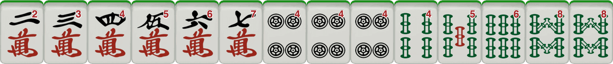
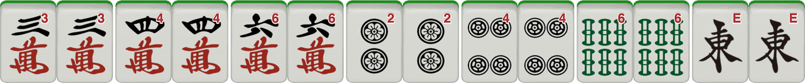
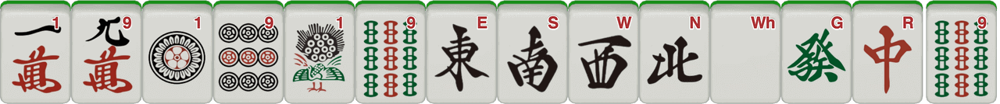

General Mahjong Tips
Whether you're just starting or looking to improve your game, here are some general tips to enhance your Mahjong strategy:
1. Know Your Tiles
Understanding the different types of tiles (bamboo, characters, dots, winds, dragons) and their meanings is essential. The better you know your tiles, the better your chances of making strategic decisions during gameplay.
2. Don't Overextend
It’s tempting to go for high-scoring hands, but sometimes it’s better to play conservatively. If you’re unsure about your hand, focus on completing a basic hand first before chasing a more complex one.
3. Watch Your Opponents
Pay attention to what your opponents are discarding and which hands they seem to be building. This can give you insight into their strategy and help you avoid discarding tiles they need.
4. Consider the Joker
If you're playing a variant that uses jokers, use them wisely. Don’t waste jokers on low-scoring combinations; save them for the harder-to-complete hands that will give you higher points.
Variant-Specific Tips
Different Mahjong variants come with their own unique twists. Here are some tips for popular variants:
Riichi Mahjong
Riichi is a popular variant that requires a lot of strategy and patience. Here are some tips:
- Riichi Declaration: Don’t declare Riichi unless you’re confident that you’re only one tile away from completing your hand. This can give away your strategy to other players.
- Keep an Eye on the Dora: The Dora indicator can greatly increase your hand’s value. Keep track of the dora tiles and adjust your strategy to make use of them.
- Discard Wisely: Don’t discard your honors (winds and dragons) too early. These tiles can be useful for completing a hand or forming a concealed hand.
Chinese Mahjong
Chinese Mahjong often involves a different set of rules and scoring. Here are a few tips:
- Focus on Pungs: In Chinese Mahjong, Pungs (three-of-a-kind) are valued higher than other combinations, so try to aim for them in your hand.
- Be Patient with Chows: Chows (three consecutive tiles of the same suit) can be valuable, but they often take longer to form. Be patient and focus on your other sets while waiting for the right tiles.
- Balance Your Hand: In Chinese Mahjong, balance is key. Avoid going too heavily for one type of combination (like only Pungs or Chows) and try to keep your options open.
Winning Hands
Here are some of the most common winning hands in Mahjong:
Example 1: All Simples
A hand without any Terminal Tiles. (1s & 9s, Winds, and Dragons). This hand can have a mixture of Chows and Pungs with a pair as well.
Example 2: Half Flush
A hand consisting entirely of one suit (bamboo, dots, or characters), Wind or Dragon Tiles and a pair. This hand is challenging to complete but yields high points.

Example 3: Seven Pairs
A hand made up of seven pairs. This hand has a unique value and is a popular target for many experienced players.
Example 4: Thirteen Orphans
The Thirteen Orphans hand consists of one of each of the terminal tiles (1 and 9 of each suit) plus a pair of one of the terminal tiles. This is one of the most iconic hands in Mahjong and is incredibly difficult to achieve.
More Hand Examples
For additional hand examples, strategies, and winning combinations, check out the following resource:
Visit this site for more detailed examples of Mahjong winning hands.